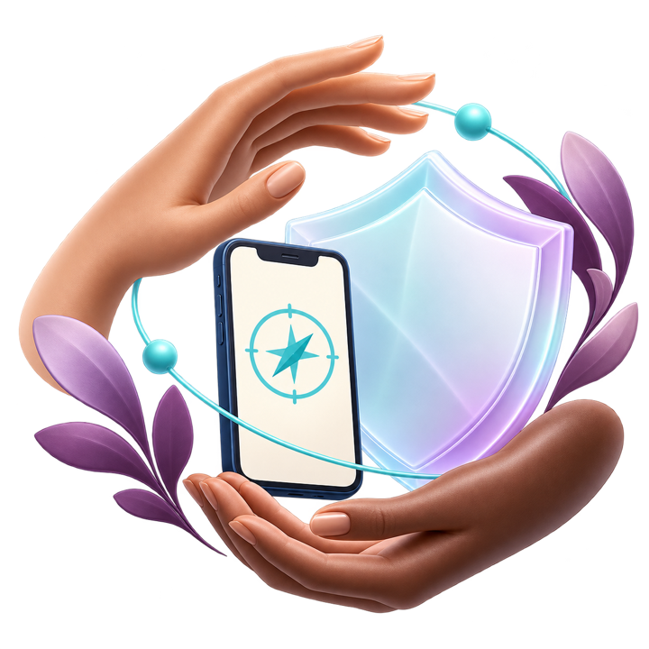
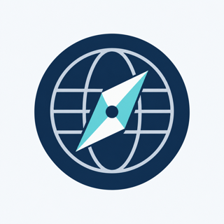

SOS Mulher
CENTRAL DE PROTEÇÃO
Mãos que acolhem, escudo que protege.
Tecnologia e cuidado em
turquesa e lavanda.
Uma identidade para acolher e uma linguagem de movimento para tornar cada estado legível. Símbolos gerados a partir das referências visuais fornecidas.

Mãos que acolhem, escudo que protege.
Tecnologia e cuidado em
turquesa e lavanda.

Globo e bússola.
Presença discreta no celular.
Atenção visual na central quando um novo evento chega do servidor.
Anel suave · 1,92 s × 3 · sem flashesPreserva a última informação conhecida enquanto tenta restabelecer a conexão.
Órbita dourada · contínua durante reconexãoUm traço único após uma ação concluída. O texto identifica exatamente o que foi confirmado.
Desenho do check · 500 ms · uma vezPrévia didática do gesto intencional. Soltar antes do fim cancela a prévia.
Somente nesta galeria · nenhum alerta é enviadoMovimento acompanha o estado; não confirma atendimento. Na central, receber um evento, reconhecer um alerta e assumir uma ocorrência são etapas diferentes. Esta página é uma galeria local: os botões não acessam o servidor, não ativam sensores e não reproduzem som. No celular, o disparo não recebe animações ou efeitos sonoros adicionais.